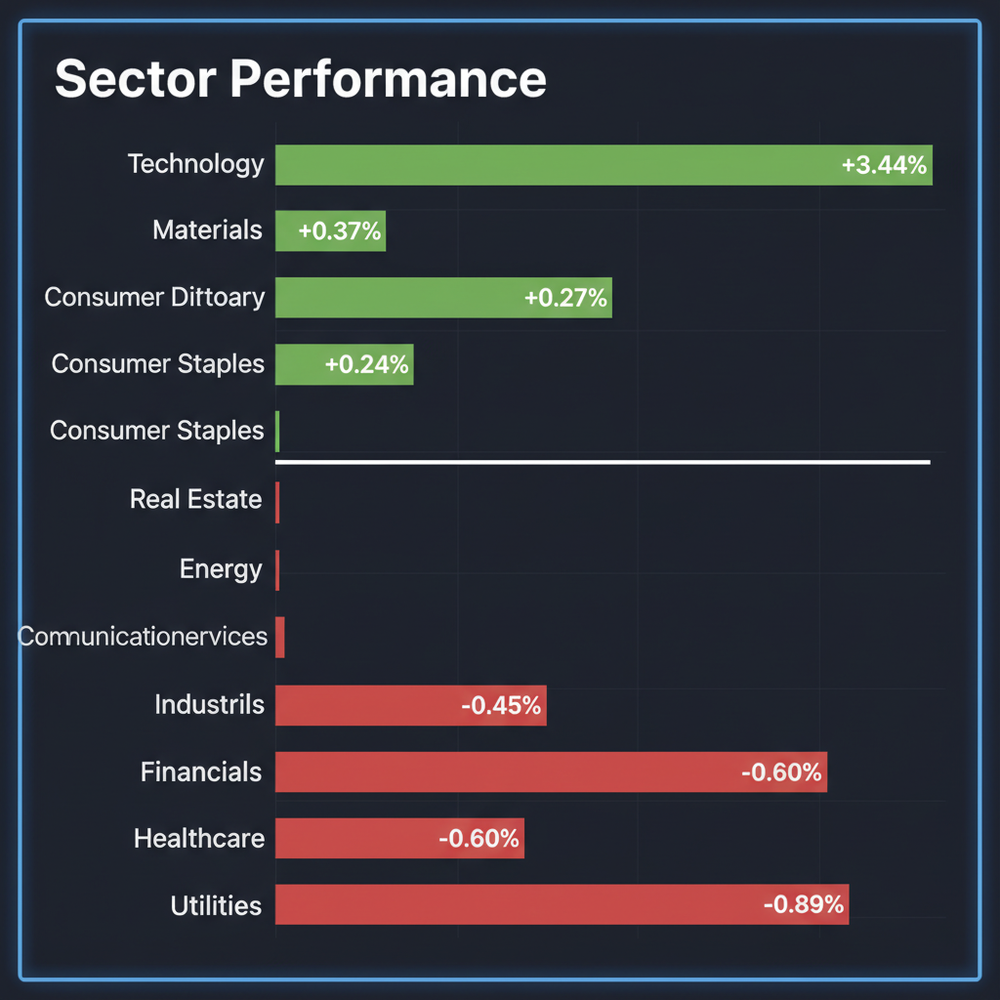
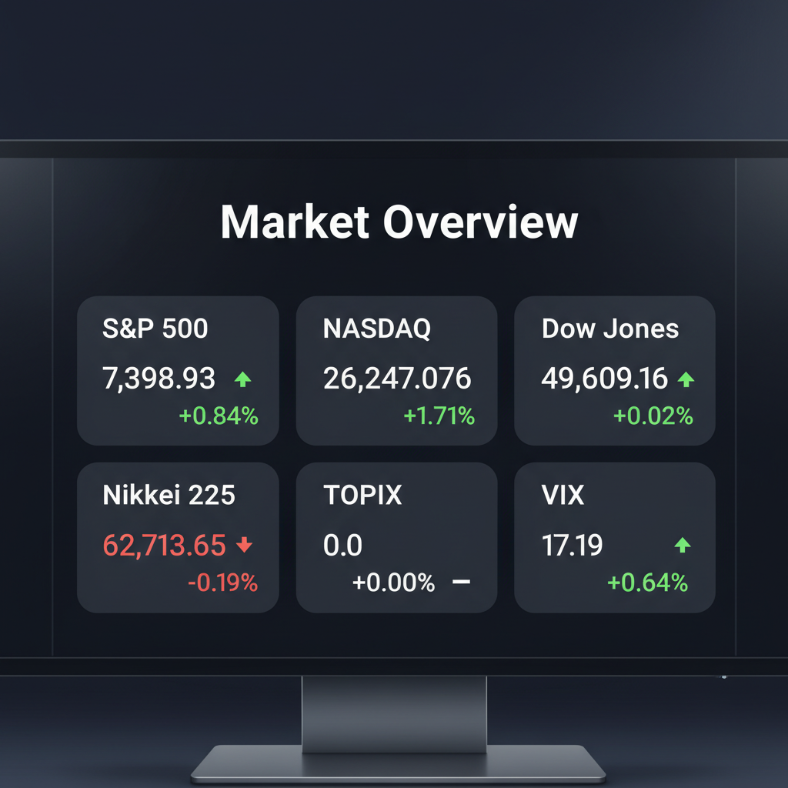

Daily Investment Report - 2026-05-09
Generated: 2026/5/9 7:29:15


以下は、投資チームミーティングの分析を統合した投資家向けの最終レポートです。
1. エグゼクティブサマリー
- 日米の主要株価指数はハイテク株主導で最高値圏にありますが、指数の上昇と同時にVIX（恐怖指数）が上昇する警戒シグナル（ダイバージェンス）が発生しています。
- AIセクター内ではNvidiaからメモリ関連（DRAM等）へ劇的な資金移動が起きていますが、極端な資金流入はテーマ相場最終局面の過熱を示唆しています。
- 今後は市場の極端な「ゆがみ」により不当に放置されたニッチトップの中小型株への選別投資と、中東地政学リスク・インフレ再燃に備えた防御的アクションが不可欠です。
2. 注目銘柄リスト
強気（買い推奨）
- 兼房（5984） [時価総額: 約140億円]: AIサーバー向け放熱素材や次世代モビリティに必要な「難削材加工」を支える工業用機械刃物のニッチトップ企業です。強固な財務基盤を持ちながらPBR1倍割れで放置されており、安全マージンを確保しながら大化け（テンバガー）を狙える絶好の銘柄です。
- ファインシンター（5994） [時価総額: 数十億円規模]: 複雑な形状の金属部品を削り出しなしで量産できる粉末冶金技術を持つ老舗企業です。次世代ロボティクスやドローン、宇宙産業のハードウェア量産期において需要が爆発するポテンシャルを秘めています。
- コメ兵HD（2780） [時価総額: 約400億円]: グローバルなインフレ・生活費高騰圧力が続く中、リユース市場の構造的な実需を取り込んでいます。高いROEを維持しつつも市場のAI偏重によって相対的に低PERに据え置かれており、インバウンド需要と内需防衛を両取りできる手堅い銘柄です。
中立（様子見）
- 瀧上工業（5918） [時価総額: 約200億円]: 業績修正を発表した老舗BtoB企業で、潤沢なネットキャッシュを抱え下値リスクは限定的です。しかし、出来高を伴うチャート上の明確なブレイクアウト（上値抜け）を確認してからの順張りが安全なため、現在は監視に留めるべきです。
- Fluor（FLR） [時価総額: 約70億ドル規模]: 決算発表後に株価が15%急落し「押し目」との見方もありますが、インフレによるプロジェクトのコスト超過など構造的な利益圧迫リスクが潜んでいる可能性があります。財務諸表でフリーキャッシュフローの改善が確認できるまでバリュートラップ（割安の罠）として警戒すべきです。
弱気（警戒）
- ソニーグループ（6758） [時価総額: 超大型]: EV事業撤退による特別損失計上というネガティブサプライズを受け、年初来安値を更新しました。テクニカル的にも明確なサポートラインを割り込む「落ちるナイフ」状態であり、底打ちシグナルが点灯するまで手出し無用です。
- Inspire Brands（未上場・IPO申請中） [時価総額: 巨大外食企業]: 巨大外食チェーンを束ねる同社が極秘にIPOを申請しましたが、現在の過熱した市場環境下での上場は、既存株主やPEファンドによる高値での売り抜け（イグジット）を意図している可能性が高く、上場直後の公募割れリスクに警戒が必要です。
3. セクター推奨ランキング
中東（イランのタンカー拿捕やハルク島での原油流出疑惑）での物理的衝突による原油供給リスクに対する最も直接的なヘッジとなります。インフレ再燃ショックへの強力な防衛策です。
AIエコシステムを物理的に支えるハードウェア製造や、脱中国のサプライチェーン再編の恩恵を受ける領域です。市場の「ゆがみ」によって割安に放置されている優良中小型株が多数存在します。
- 3位：ディフェンシブ（ヘルスケア XLV・公益 XLU）
現在AI相場の裏で下落していますが、市場が極度の過熱状態にある今、相場急落時（フラッシュ・クラッシュ）に資金が逃避する安全な受け皿として、ポートフォリオへの組み込みを推奨します。
- 4位：半導体インフラ・メモリ関連（AI次世代インフラ）
DRAM ETFへの1日10億ドルの資金流入など強烈なモメンタムがありますが、これはバブル末期の「バイイング・クライマックス」の兆候でもあります。新規買いは控え、既存ポジションの利益確定を優先すべきセクターです。
4. 今週の注目イベント
- 随時：中東ハルク島周辺での原油流出疑惑・タンカー拿捕に関する続報と、原油価格への波及状況の確認
- 随時：AppleによるIntel製チップ購入契約の可能性に関する正式発表
- 随時：米国における適格中小企業株式（QSBS）の税制優遇に対する、ニューヨーク州等の規制強化アクション
- 随時：英国地方選挙結果を受けた、グローバルな「生活費高騰（インフレ）への有権者の反発」が各国の金融政策に与える影響
5. リスク要因
- 中東発のインフレ再燃ショック： イラン情勢の悪化によりエネルギー供給網が実質的に遮断された場合、原油高がインフレを再燃させ、利下げ期待の完全な剥落と金利の高止まりを引き起こすリスク。
- VIX上昇とダイバージェンス： 株価指数が最高値を更新する一方でボラティリティ指数（VIX）が上昇に転じており、スマートマネー（機関投資家）が水面下で暴落へのプライシングを開始している点。
- 一極集中の崩壊： 過去100年の富の半分がわずか46社で創出された歴史が示す通り、少数の大型株やメモリ関連株に極端に資金が集中しており、これらがつまずいた際にインデックス全体が連鎖的に崩落するリスク。
6. アクションアイテム
- 過熱しているテクノロジー関連（XLK）や急騰したメモリ関連銘柄（Intel、AMD等）のポジションを半減させ、直近安値のすぐ下にトレーリングストップを設定して確実に利益をロックする。
- ポートフォリオのキャッシュ比率を大幅に引き上げ、浮いた資金の一部をエネルギー（XLE）やヘルスケア（XLV）などのインフレヘッジ・ディフェンシブ領域へリバランスする。
- インデックス投資や大型株の比重を下げ、PBR1倍割れで強固な財務とニッチ技術を持つ日本の中小型株（兼房、ファインシンター等）を底値圏で打診買いする。
- 市場の突発的な急落に備え、アウト・オブ・ザ・マネーのプットオプション購入や、VIXコールオプションを通じたテールリスク・ヘッジを直ちに構築する。